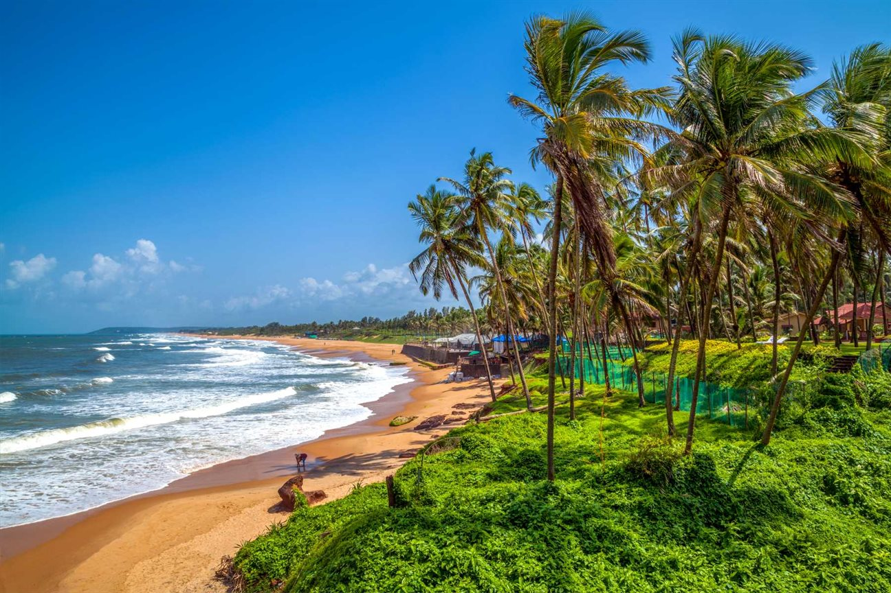

The Great Goa Sunny Beach
Last Updated: July, 2024
Goa, located on the western coast of India, is renowned for its stunning beaches, vibrant culture, and laid-back atmosphere. As a former Portuguese colony, Goa offers a unique blend of Indian and European influences, making it a diverse and exciting destination for tourists from around the world. Goa's coastline stretches for approximately 100 kilometers and is dotted with a variety of beaches, each with its own distinct character. Popular beaches like Baga, Calangute, and Anjuna in North Goa are known for their lively atmosphere, bustling markets, and vibrant nightlife, featuring beach parties and clubs that attract a younger crowd. In contrast, South Goa offers more tranquil and secluded beaches such as Palolem, Agonda, and Benaulim, which are perfect for relaxation and unwinding amidst nature.
The beaches of Goa are not just about sunbathing and swimming; they also offer a wide range of water sports and activities, including parasailing, jet-skiing, banana boat rides, and scuba diving, providing adventure seekers with plenty of excitement. Additionally, Goa's beaches host numerous shacks and restaurants where visitors can savor delicious seafood, traditional Goan dishes, and international cuisine while enjoying stunning ocean views.
Beyond the beaches, Goa is rich in cultural heritage, with numerous historic churches, temples, and forts to explore. The Basilica of Bom Jesus and Se Cathedral are UNESCO World Heritage sites that reflect Goa's colonial past and architectural beauty. The vibrant markets of Anjuna and Mapusa offer a glimpse into local life and provide opportunities to shop for unique souvenirs, handicrafts, and clothing. Goa's beach culture is complemented by its annual festivals and events, including the Goa Carnival and Sunburn Festival, which draw visitors from all over the globe. With its combination of natural beauty, cultural richness, and vibrant lifestyle, Goa remains a top destination for beach lovers and travelers seeking a memorable and diverse experience.